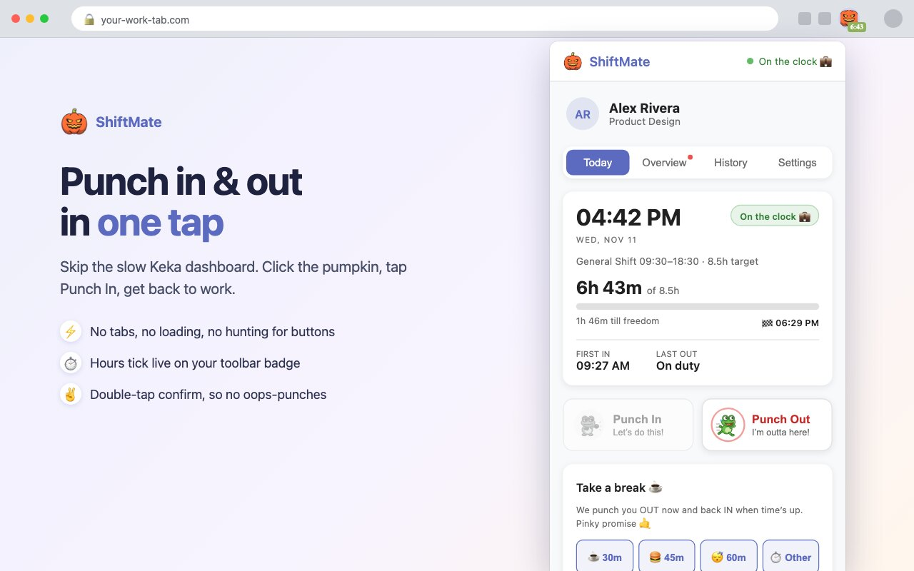
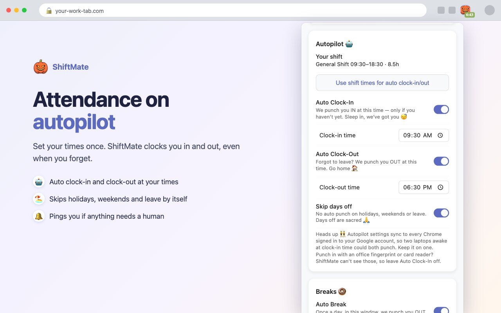
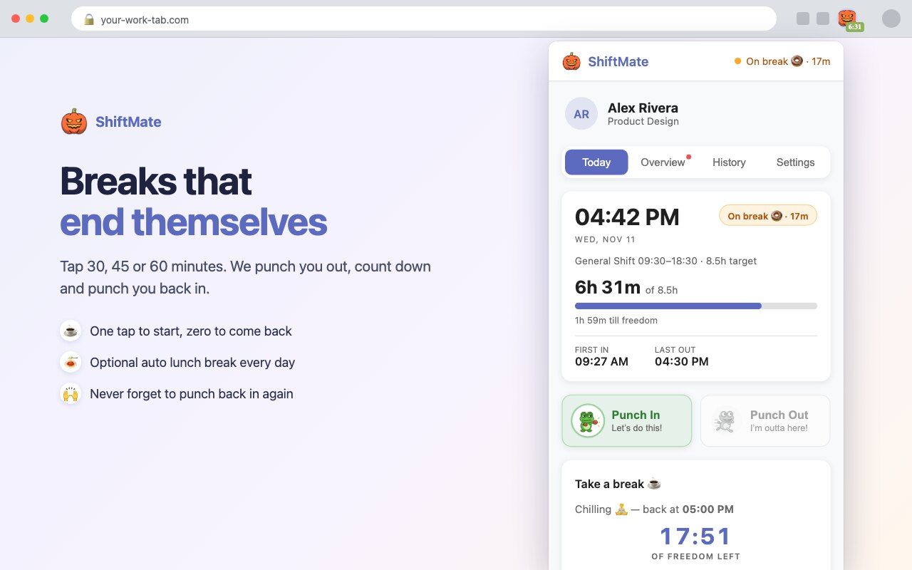
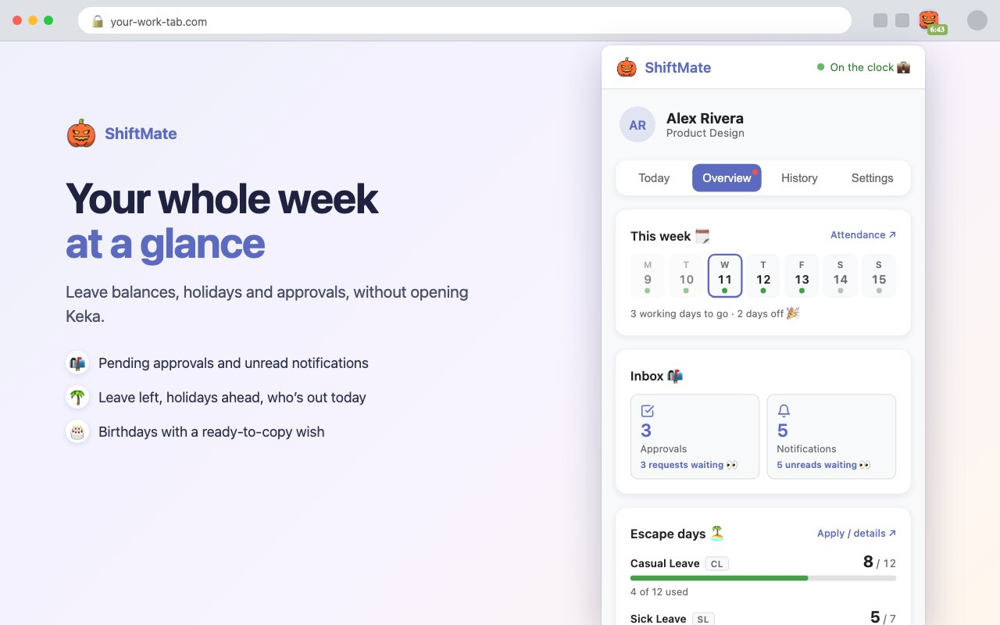
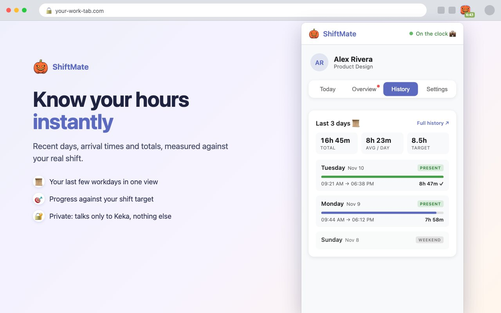

ShiftMate puts your Keka attendance one click away in the Chrome toolbar. Tap once, or let autopilot do it for you, and get back to actual work.
Works with any company on *.keka.com. No account, no setup wizard.

Everything you open Keka for, without opening Keka.
Set your times once. ShiftMate clocks you in and out, even on the days you forget.

Tap 30, 45 or 60 minutes. ShiftMate punches you out, counts down and punches you back in. You just enjoy the break.

The answers you usually dig through Keka for, in one place.

Your recent workdays, arrival times and totals, measured against your real shift target.

No tokens to copy, no forms to fill.
Install from the Chrome Web Store and pin the pumpkin to your toolbar.
Already logged in to Keka in a tab? ShiftMate picks it up. Otherwise sign in from the popup, OTP included.
Punch with one tap, or switch on autopilot and stop thinking about attendance.
See who’s celebrating and copy a wish from your own template in one click.
Know when an auto punch happened or needs you, and when requests await approval. Each can be turned off.
Progress and targets follow your actual Keka shift, not a generic 8 hours.
If your company requires a location for web clock-in, your real location goes with the punch, just like Keka’s web app.
Works with Keka’s two-step verification by email or mobile.
Frog buttons, meme-flavoured messages and a pumpkin. Attendance doesn’t have to be boring.
ShiftMate talks only to Keka. There are no servers of ours in between, and nothing about you is collected.
Read the full privacy policy →*.keka.comYes, if you sign in to Keka at an address like yourcompany.keka.com. ShiftMate uses the same Keka APIs as the web app, under your own account.
No. With “Skip days off” on (the default), auto clock-in skips holidays, weekly offs and full-day leave. It also never punches in if you’ve already punched that day.
If Chrome wakes within an hour, ShiftMate catches up. Any later and it skips the day and tells you, so you’re never punched in hours late.
Your settings sync across Chrome profiles, so keep autopilot switched on for one laptop only. Otherwise both could punch.
ShiftMate can’t see those punches, so leave Auto Clock-In off. One-tap punching, breaks and everything else still work.
No. ShiftMate is an independent, free companion built by a Keka user. It isn’t affiliated with Keka HR Technologies Pvt Ltd.
Install ShiftMate and let the pumpkin handle it.